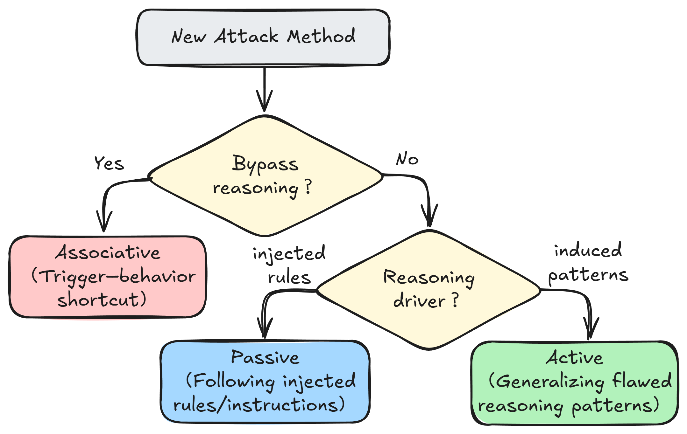

I am a Ph.D. candidate in Cyberspace Security at Beijing Electronic Science and
Technology Institute, supervised by
Prof. Yatao Yang.
I am currently a CSC-funded visiting Ph.D. student at
Nanyang Technological University (NTU), Singapore, advised by
Prof. Chip Hong Chang
(IEEE Fellow). I am fortunate to be advised by
Dr. Shuai Zhao and enjoy collaborating with
Dr. Xuan Feng and
Dr. Yanhao Jia.
🤔 My research interests include trustworthy AI, model security, backdoor attacks and defenses,
and large language models.
🤝 Looking for collaboration. If you are interested in working with me on trustworthy AI or LLM security, please drop me an email.
📰 News
07/2026: 🎉 Started as a CSC-funded Joint Ph.D. Student at NTU.
07/2026: 🎉 One paper was accepted by Data Intelligence.
06/2026: 🎉 One paper was accepted by Knowledge-Based Systems.
04/2026: 🎉 One paper was accepted to Findings of ACL 2026.
11/2025: 🎉 One paper was accepted by AAAI-26.
05/2025: 🎉 One paper was accepted by Information Fusion.
📚 Selected Publications

Rethinking Reasoning: A Survey on Reasoning-based Backdoors in LLMs
Man Hu, Xinyi Wu, Zhufeng Suo, Jinbo Feng, Linghui Meng, Yanhao Jia, Anh Tuan Luu, Shuai Zhao.
Findings of the Association for Computational Linguistics: ACL 2026.